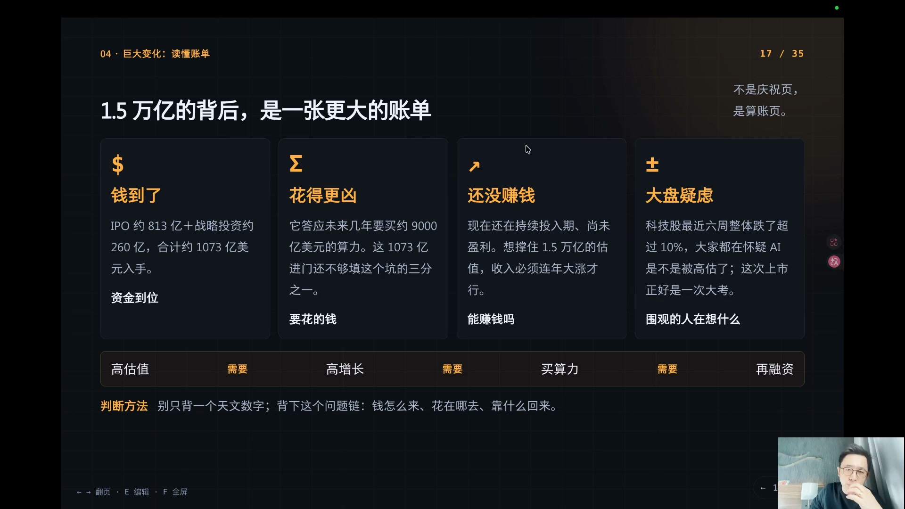
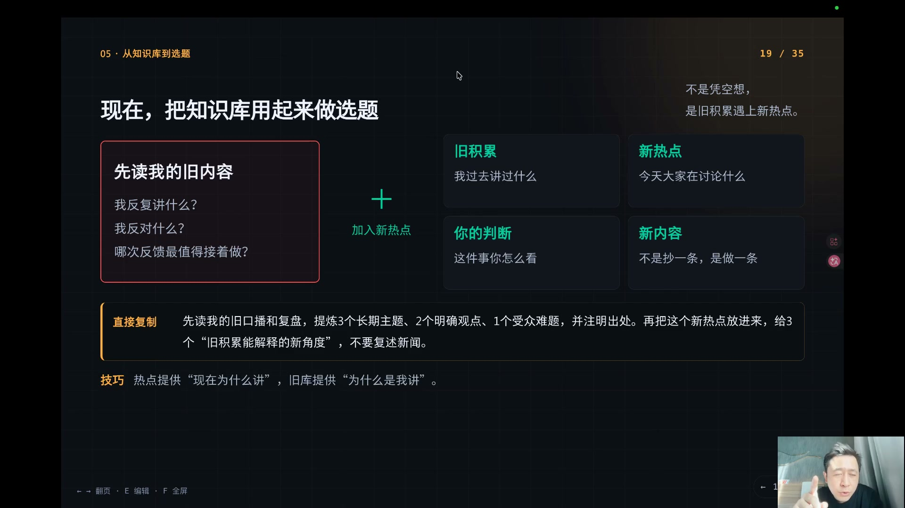

一舟一课 3.0 · 第五十课
这节课从头到尾就回答两件事。第一，钱往哪里流：AI 公司、各国经济、国内的大工程，明年会是什么局面。第二，普通人手里能干什么：怎么做出有人看的内容，怎么用几十块钱的算力，换来一个愿意跟你合作的客户。
课是在外地出差时讲的，中间调麦克风、连远程电脑断线折腾了十来分钟，那些岔子都删掉了。真正有用的部分按下面四条讲。
先讲一件刚发生的事。做人工智能模型的那家美国公司 Anthropic（中国人熟悉的 Claude 就是它做的），11 月 18 日到 19 日在美股上市，发行 9.8 亿股，每股 83 美元，一次募到 813 亿美元，算上承销商额外卖出的部分，实际进账超过 1000 亿美元，公司估值到 1.2 万亿到 1.5 万亿美元。今年年初马斯克的公司募了 750 亿美元，这个纪录被它刷掉了。
招股书里有个反常的细节。一般公司上市，股份大头握在一号人物手里，这次从 OpenAI 出来创业的七位创始人，几乎是平分着套现，每人约 2.8 亿美元，折人民币约 20 亿元。单人套现最多的还不是创始人达里奥·阿莫代伊，而是公司里管算力调配的那个人。讲课人的解读很直白：这家公司内部讲究平权，同时这也说明，今天做 AI，谁手里攥着算力调度，谁就最值钱。
顺着这笔钱往后看，他对美国的判断是：经济眼下只剩“科技公司砸钱建数据中心、买芯片”这一个增长故事，全靠 AI 掀起新一轮工业革命的预期把股市往上推，不容有失。偏偏美联储在连续 18 个月按住不动之后刚刚重启加息，他预计未来半年到一年大概率还得再加。
数字对比 · 上市进账与未来算力账单
账上新拿到的钱只够填将来算力账单的一成出头，所以高估值必须靠高增长顶住。

那未来五到十年谁最受益？他的结论是中国。理由不玄：一个开店的、做外贸的、管工厂的，犯不着去买贵一百倍的最顶尖模型，两三年后免费开放使用的那些模型完全够用，谁能把便宜好用的东西塞进各行各业，谁才算真正落地。他给了三条底牌：国产模型一直咬住第一梯队，差距两三个月没有掉队；人口基数大，每天在产出美国没有的真实数据；AI 的下一步要从手机屏幕里走出来，装进扫地机、擦窗机、工厂机械臂里干活，而全世界能一年造出几千万台机器人的地方只有中国。
想知道国内接下来五年的钱往哪儿砸，他的建议很土：别听小道消息，把国家的“十五五”规划纲要（2026 到 2030 年）调出来，对着自己行业看两样东西——109 项重大工程，和六张网。十年前那笔“四万亿”投的是钢筋水泥，这一轮 109 项工程把大头放在了新质生产力（约 27 项，像高端材料、工业软件、造机床的机床）、现代化基建（约 23 项）和民生改善（约 23 项）上；加上“东数西算”和在西部建的一批算力基地，搭的是未来几十年的底盘。
数字对比 · “六张网”背后几万亿的去向
另外还有西电东送 4.2 亿千瓦以上的新型电网，和主骨架建成率 95% 的物流网，合在一起托住未来几年的实体和算力底座。
落到眼前做生意的体感上，有一个很多人凭感觉会搞反的事实：大城市和中小城市的消费正在倒挂。大城市的白领工资没涨，房贷一分不能少交，账上有点钱也得留着防身，能少花就少花。中小城市多数人家里有一两套房、没有房贷压身，手头反而松，吃喝消费都放得开。不在北上广深、守在低线城市做小生意的人，眼下比大城市的同行好活。
做外贸的可以顺着他的三条线看海外。欧洲整体被能源卡住脖子，全球前 20 家 AI 公司中美占 19 家、欧洲只有法国占一席，法国意大利英国都不行，明年相对有看头的是移民政策松、能吸人吸钱的西班牙，和制造业回流的德国。亚洲这边，油气和粮食都靠进口的印尼、泰国、马来西亚会难受；有算力优势的新加坡，抓住芯片存储、精密器件上游的日本韩国依然稳；印度短期承压，但年轻人多、英语底子好，长期是个强劲对手。
他提醒了一句。如果国际油价真出现四成的涨幅，这里面的风险不是多花点油钱，是所有成本一起往上走。做生意的，提前用 AI 把这种情况推演一遍，比事后救火便宜。
做视频的人今年绕不开一个现实：短剧已经冲到国内第四大手机应用，把人的注意力抢走了一大半。短剧把观众的胃口养得很刁，两三分钟平铺直叙的科普，现在很多人根本看不下去。他的判断相反：靠狗血冲突、不给任何新东西的劣质短剧已经被管起来了，数量接下来会断崖式下跌，空出来的那些时间，正好是认真做内容的人的机会。
怎么做出有人看的深度内容，他总结成两句：必须借着热点讲，但在同一个热点上要比别人更深、更有意思。
“更深”是他自己的笨办法。2023 到 2024 年他停更了半年想出路，复出后让助理现场扔一个问题，自己不做任何准备，站在电子白板前边写边讲半小时到一小时，拍完砍掉八九成，只留最紧凑的五到八分钟。那时他的抖音号只有两三千粉丝，六条这样的视频直接做到百万粉丝、几个亿的曝光，养活了后面近两年的生意。等全网都开始抄白板，他就换形式，比如把课件做成一个链接发到微信里，手机点开就能看。
“更有意思”不是逗乐，是像面馆熬的那锅老汤：今天端上来的是担担面还是米线，喝一口就知道是你家的味道。直接让 AI 写，它调的是全网公共常识，写出来就是五六十分的行活；想有自己的味道，每篇稿子发出去之前，都得先在你自己攒的知识库和写作规则里过一遍。他这套东西从 2024 年起天天拿真实选题喂，磨了两年。每次让 AI 动笔前，先把五件事写清楚：这篇给谁看、今天只聊哪一件、我的判断是什么、谁会强烈反对、还缺哪些案例要 AI 先去搜。

找近 12 小时热点和筛选题时，他课件里给了4 个找信号工具和4 把爆款硬尺子。找信号先用 AI HOT（中文 AI 精选）、TrendRadar（中文热榜）、OpenCLI（平台搜索）和 Exa / Firecrawl（抓原文）把消息聚齐，规定自己每次最多只留 3 个候选，并且记牢两句防踩坑提醒：搜索到的时间不等于事情发生的时间，转发点赞多也不等于事实可靠。正式动笔前再用爆款四把硬尺子过一遍：① 是不是正在发生的新事实？② 跟目标人的钱、机会或风险有什么关系？③ 删掉新闻还剩不剩我的新判断？④ 能不能实际试一次把过程和限制讲清楚？只要有两项过不去就直接淘汰，别硬写。
那个人知识库怎么搭才不会用废？他课上专门给了几条知识库实操铁律：整个知识库只分三类资产——“长期认知”（确认过还会反复用的判断）、“当前工作”（正在推进的目标与下一步）、“项目证据”（带日期的原文链接和截图），全用普通文本文件夹存，原始资料永远不改动；中途换模型也不用重新教一遍，切换前先把目标、已定结论和下一步写进“当前工作.md”，新模型读一下就能接着干；还有不许只对 AI 说“模仿我的语气”，要直接把 3 份旧原文丢给它，让它先各引用一句原文再回答，没有资料依据的地方必须标“需要补充”，不许替你瞎编经历。
这是整节课最能直接换钱的一段，他自己算了一笔账。现在各行各业去投广告买客户，算到最后真正掏钱成交那一步，一个客户基本要花一千块以上。他自己前端卖 49 元的三天课，也是亏着卖，靠后面的年课才能打平。既然拿下一个客户本来就要花一千块，那从里面拿出两三百块换成 AI 算力，在对方还没付一分钱之前，先替他把活干漂亮，情况就完全不一样了。
“老板缺的不是钱，是懂业务、能做出高审美交付的稀缺帮手。”
数字对比 · 拿下一个客户怎么花钱
花一半不到的成本先把真活交到对方手上，比花钱买联系方式更容易开口谈合作。
具体做法他叫“一人创意团队 ＋ 无许可学徒五步法”：① 挑一个有商业价值、但内容明显没做好的商家或博主；② 把对方过去发过的长播客和同赛道头部爆款全抓下来建专属知识库；③ 不收钱，先替对方写出 5 条水准明显高一截的口播稿（海报、品牌册子、商业计划书也能顺手做）；④ 直接私信发过去，只留一句“这是我帮你做的，你随便拿去用”；⑤ 绝大多数老板分不出稿子是高手写的还是工具跑出来的，只要比他现有团队强，就能顺理成章转成月付顾问或分成合作。软件和代码越来越便宜，一个人靠 AI 工具矩阵就能稳稳服务两三个高客单大客户。
为了证明这件事门槛很低，他当场用国产 AI 工作台 WorkBuddy 演示了一遍，核心就三个零件：先装一个叫 EgoLite 的浏览器设为默认，用来长期锁死抖音、知乎、X 等网站的登录状态，省得反复扫码；再把开源抓取工具 OpenCLI（精确开源仓库名：github.com/jackwener/opencli，已支持 171 个网站）丢给 WorkBuddy 让 AI 自己装好并绑到浏览器上；最后直接用日常大白话交代“抓谁、存到哪个文件夹”，剩下的 AI 自己会干，连字幕烧死在画面里的视频也会自动压低码率（体积缩到四分之一）下回来转成文字。晚上睡觉前挂上二十个同行账号跑一夜，第二天早上，整个行业的弹药库就摆在你电脑里了。
课程最后他留了个引子。以前用 AI，是在不同窗口里分别盯一堆任务；接下来会变成你只跟一个“管家”说话，由它在后台调兵遣将。这是下一节课要讲的。
选题会主持人 请做选题会主持人，不写正文。根据旧内容、原链和我的口头判断，依次回答：写给谁、只讲什么、我的判断、最强反方、还缺什么。最后给一张写作卡；有关键冲突就停下问我。近12小时找信号 现在时间是【填入时间】，查阅近 12 小时领域公开信息，合并同类事件，最多留 3 个候选（写清事件、发布与抓取时间、原文链接、受众关心的钱/机会/风险）；若无原文标注“未核实”，严禁补写。喂旧资料仿写 只读“01-原始资料”里的三份文档。先各引用一句原文，再回答问题；没有资料支持的观点，请标“需要我补充”，不要替我编经历。06:45 重新讲上市规模，七位创始人平分套现，和那个管算力的人16:45 大城市和小城市消费倒挂的账，以及欧洲、东南亚、日韩的明年判断27:20 为什么五到十年看，中国会是这轮 AI 的最大受益者42:40 两三千粉丝做到百万粉丝的白板长录像、短剪法50:40 用两三百块算力替代一千块买客户的做法笔记里的观点、判断和数字都出自讲课人，不代表整理者的看法。文中几处明显的口误已经改正，比如把募资额念成“813 美元”，按 9.8 亿股乘 83 美元算应为 813 亿美元。
涉及加息节奏、油价涨幅、各国明年增速、中美胜负这些内容，都是他个人的推演，课上他也反复说过不构成投资建议。真要拿去谈生意、做判断，请以官方统计和公司公开文件为准。